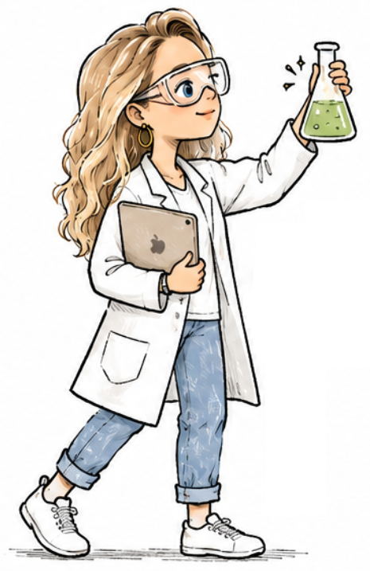
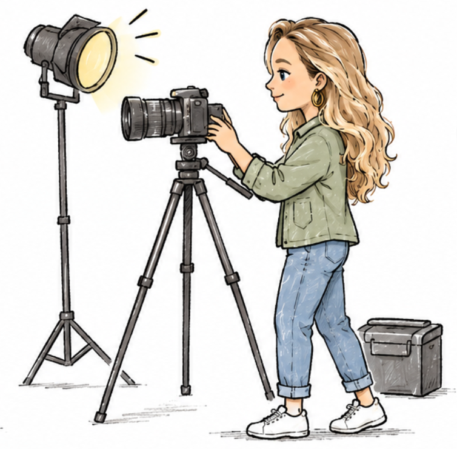

The two sides of my craft
One side is where I get curious and experiment.
The other is where I document what made it out into the world.
Click on a side to explore the work that lives there.
↑ click a word ↑

Things I'm curious about.
Come into my idea lab where I take things apart to see how they work: little experiments, demos, whatever helps it click, then help you see it too.
enter the lab →
Things worth documenting.
Projects I've built in the real world. I reflect on what shipped, what stuck, and what made an impact. What I'd do differently, too.
go behind the scenes →Want takeaways instead of project walkthroughs?